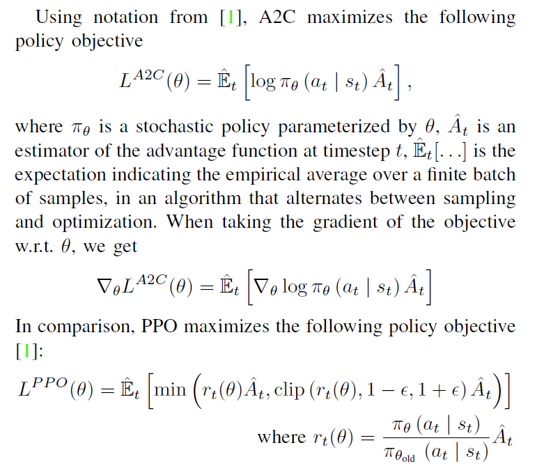

Proximal Policy Optimization
Reminder:
- 
- 注意PPO与A2C的优化目标是不一样的，A2C中有对数概率，PPO中只有Clip。
- REINFORCE, A2C, A3C, DPO, ORPO都采用了对数概率，对数概率的目的是为了使得梯度的计算更加稳定，同时也能够评估策略的优劣性。
Algorithm Description
- 如果互动的策略与学习的策略相同，则是On-policy,反之相反。
- off-policy的优势：
- 一次收集到的数据可以用很多次，不会浪费数据。
- 可以用一组data多次更新参数θ。
- 如何实现off-policy? -> Importance Sampling -> 通过一种分布预测另一种分布下的期望：$E_{x\textasciitilde p}[f(x)] = E_{x\textasciitilde q}[f(x)p(x)/q(x)]$
- Issue of Importance Sampling -> 两种分布不能够差太多，否则这种估计的方差会非常大。
- 现在不用改变参数的模型与环境互动，只用与另一个actor来做互动并观察就好了。但是会有修正项$\mathbf{\dfrac{p_\theta(\tau)}{p_{\theta^\prime(\tau)}}}$,$\tau$是我们采到的样本。要对Demonstration进行权重修正。
- 可以多次使用同一个策略所采集的轨迹数据进行训练，只要用到Importance Sampling就好，这样我们也可以采用与DQN相同的Experience Replay办法。
- 关于这个
Importance Weight$\mathbf{\dfrac{p_\theta(\tau)}{p_{\theta^\prime}(\tau)}}$如何计算，我们只要将theta带进策略网络中，就可以得出每一个状态下分别选择不同动作的概率，就可以直接进行比值处理。
- 注意如果我们使用的是PPO1(PPO-Penalty)，那么我们计算KL散度的数据是同样的s下输出的动作分布的区别而不是参数的区别。因为我们关注的是行为，而不是具体的参数。
- 如果使用PPO Clip，那么当比值大于1+epsilon的时候函数会变为平坦函数，优化器会限制参数的更新幅度。
- 注意我们在PG大类的算法当中都要对概率取对数，这样可以有效地方便我们的计算。而且也要对不变的
Behaviour Policy取.detach()
- 但是请注意！！我们在进行clip操作的时候仍然是根据原来的比值来决定的，在实现的过程中也就是原先取完log的结果再相减取e指数.
- 注意！我们在优化Critic Model的时候并不用优化td_target， 只用优化
critic模型的预测就可以了，所以在F.mse_loss(td_target.detach(), critic(states))即可，detach可以避免td_target()进入梯度的计算过程。
- 在进行梯度计算的时候，一个
loss.backward()的时候会将梯度信息回传给定义loss的表达式的神经网络，在对应的optimizer.step()的时候起到实际上的作用。
SourceCode
import gym
import torch
import torch.nn.functional as F
import numpy as np
import matplotlib.pyplot as plt
import rl_utils
class PolicyNet(torch.nn.Module):
def __init__(self, state_dim, hidden_dim, action_dim):
super().__init__()
self.net = torch.nn.Sequential(
torch.nn.Linear(state_dim, hidden_dim), torch.nn.ReLU(),
torch.nn.Linear(hidden_dim, action_dim), torch.nn.Softmax(dim=1)
)
def forward(self, x):
return self.net(x)
class ValueNet(torch.nn.Module):
def __init__(self, state_dim, hidden_dim):
super().__init__()
self.net = torch.nn.Sequential(
torch.nn.Linear(state_dim, hidden_dim), torch.nn.ReLU(),
torch.nn.Linear(hidden_dim, 1)
)
def forward(self, x):
return self.net(x)
class PPO:
def __init__(self, state_dim, hidden_dim, action_dim, actor_lr, critic_lr, lmbda, epochs, eps, gamma, device):
self.actor = PolicyNet(state_dim, hidden_dim, action_dim).to(device)
self.critic = ValueNet(state_dim, hidden_dim).to(device)
self.actor_optimizer = torch.optim.Adam(self.actor.parameters(), lr = actor_lr)
self.critic_optimizer = torch.optim.Adam(self.critic.parameters(), lr = critic_lr)
self.gamma = gamma
self.device = device
self.lmbda = lmbda
self.epochs = epochs
self.eps = eps
def take_action(self, state):
state = torch.tensor([state], dtype = torch.float).to(self.device)
probs = self.actor(state)
action_distribution = torch.distributions.Categorical(probs)
action = action_distribution.sample()
return action.item()
def update(self, transition_dict): #off-policy version
states = torch.tensor(transition_dict['states'], dtype = torch.float).to(self.device)
actions = torch.tensor(transition_dict['actions']).view(-1, 1).to(self.device)
rewards = torch.tensor(transition_dict['rewards'], dtype = torch.float).view(-1, 1).to(self.device)
next_states = torch.tensor(transition_dict['next_states'], dtype = torch.float).to(self.device)
dones = torch.tensor(transition_dict['dones'], dtype = torch.float).view(-1, 1).to(self.device)
td_target = rewards + self.gamma * self.critic(next_states) * (1 - dones)
td_error = td_target - self.critic(states)
advantage = rl_utils.compute_advantage(self.gamma, self.lmbda, td_error.cpu()).to(self.device)
old_log_probs = torch.log(self.actor(states).gather(1, actions)).detach() #note the log and the detach()
print('type of states and actions are {} and {}' .format(states.shape, actions.shape))
for _ in range(self.epochs): #with MBGD Method
log_probs = torch.log(self.actor(states).gather(1, actions))
ratio = torch.exp(log_probs - old_log_probs)
surr1 = ratio * advantage
surr2 = torch.clamp(ratio, 1.0 - self.eps, 1.0 + self.eps) * advantage
actor_loss = torch.mean(-torch.min(surr1, surr2)) #we want to maximize the actual objective function
critic_loss = torch.mean(F.mse_loss(td_target.detach(), self.critic(states)))
self.actor_optimizer.zero_grad()
self.critic_optimizer.zero_grad()
actor_loss.backward()
critic_loss.backward()
self.actor_optimizer.step()
self.critic_optimizer.step()
actor_lr = 1e-3
critic_lr = 1e-2
num_episodes = 500
hidden_dim = 128
gamma = 0.98
lmbda = 0.95
epochs = 10
eps = 0.2
device = torch.device('cuda') if torch.cuda.is_available() else torch.device('cpu')
env_name = 'CartPole-v0'
env = gym.make(env_name)
env.reset(seed = 0)
torch.manual_seed(0)
state_dim = env.observation_space.shape[0]
action_dim = env.action_space.n
agent = PPO(state_dim, hidden_dim, action_dim, actor_lr, critic_lr, lmbda, epochs, eps, gamma, device)
return_list = rl_utils.train_on_policy_agent(env, agent, num_episodes)
episodes_list = list(range(len(return_list)))
plt.plot(episodes_list, return_list)
plt.xlabel('Episodes')
plt.ylabel('Returns')
plt.title('PPO on {}'.format(env_name))
plt.show()
mv_return = rl_utils.moving_average(return_list, 9)
plt.plot(episodes_list, mv_return)
plt.xlabel('Episodes')
plt.ylabel('Returns')
plt.title('PPO on {}'.format(env_name))
plt.show()
Syntax Reminder
.item()仅适用于单元素的张量，从这个单元素的张量中提取出值并转化为Python标准类型.view()用于将原张量转换为特定的格式，其中不明确的数字可以使用-1代替，会自行计算出合适的值。- 代码中的
td_target的计算都是基于二维向量的element-wise计算方法，都是进行逐元素的运算。
- 可以使用
self.critic(states)的原因是在nn.module中已经预先定义了__call__()方法，默认我们在调用critic()方法的时候就会使用.forward()方法。
- 注意我们不想要发生变化的量需要手动添加
.detach()
- PPO会限制更新幅度，所以我们实际最大化的值并不是实际函数，而是代理函数（Surrogate Function）。例如在PPO中代理函数就是经过了Penalty或者Clip的函数。
- 在计算实际的ratio的时候，我们一般都会先取对数再相减再取exp， 这样一个是因为计算会更快，另一个是具有更强的稳定性。虽然结果是相同的，但是可以处理一些较大的数据时我们面临的问题。
env.reset()会返回state的多种信息，在CartPole-v0中返回的是位置速度等等。- 在
torch.gather(dim, index)方法中，如果dim = 0，意思是按照行索引取值。例如：
array = torch.tensor([1, 2, 3],
[4, 5, 6])
index = torch.tensor([0, 1, 0],
[1, 0, 1])
new_array = array.gather(0, index)
new_array == [[1, 5, 3]
[4, 2, 6]]
- 也就是说在每一列上，根据index给出的行索引进行取值。
- 如果dim = 1:（每行上按照列索引取值）
input_tensor = torch.tensor([[1, 2, 3],
[4, 5, 6],
[7, 8, 9]])
index = torch.tensor([[1, 0],
[0, 0],
[1, 2]])
new_array = input_tensor.gather(1, index)
new_array == [[2, 1]
[4, 4]
[8, 9]
]
- PolicyNet的输出应该同样是一个二维张量，所以可以用于提取相对应的概率。
softmax()输出一般都采用dim = 1，因为这样每一行就是一个state的概率分布。